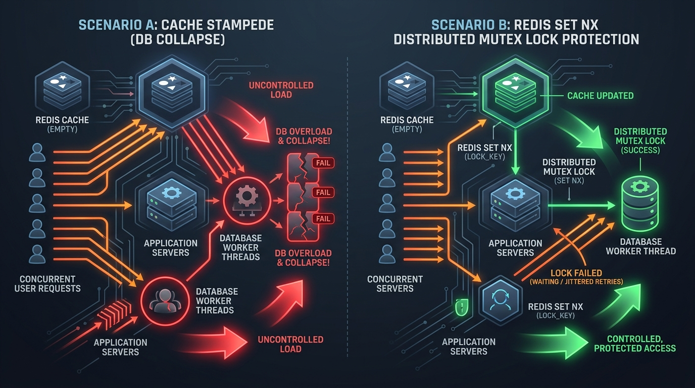

Caching is the single most effective architectural technique to achieve sub-millisecond API latencies and scale web platforms to handle millions of concurrent requests. However, implementing caching without clear pattern boundaries introduces data corruption, stale reads, and catastrophic database thundering herd crashes.

Figure 1: Server caching patterns (Cache-Aside, Write-Through, Write-Back).
1. The 4 Fundamental Caching Patterns
1. Cache-Aside (Lazy Loading)
The application directly communicates with both the cache and the primary database. On a read request:
- App queries Cache key.
- If Cache Hit, return cached value immediately.
- If Cache Miss, app queries DB, writes the result to Cache with a Time-To-Live (TTL), and returns response.
// Cache-Aside Pattern Implementation in Node.js + Redis
async function getUserProfile(userId) {
const cacheKey = `user:profile:${userId}`;
// 1. Check Redis Cache
const cachedData = await redis.get(cacheKey);
if (cachedData) {
return JSON.parse(cachedData); // Cache Hit
}
// 2. Cache Miss: Fetch from PostgreSQL DB
const user = await db.query('SELECT * FROM users WHERE id = $1', [userId]);
// 3. Populate Redis Cache with 1 hour TTL (3600s)
if (user) {
await redis.set(cacheKey, JSON.stringify(user), 'EX', 3600);
}
return user;
}
Figure 2: Real Redis in-memory lookup: sub-millisecond Cache Hit vs. PostgreSQL database fallback with automatic TTL population.
2. Read-Through Cache
The application treats the Cache as the main data store. On a cache miss, the Cache infrastructure itself transparently fetches the record from the underlying database and updates itself before returning to the caller.
3. Write-Through Cache
Data is written to the Cache and the primary Database in a single synchronous operation.
- Pros: Guarantees high data consistency between cache and DB.
- Cons: Write operations incur higher latency.
4. Write-Back (Write-Behind) Cache
Data is written immediately to the high-speed Cache layer. A background worker queue asynchronously flushes updates to the database in micro-batches.
- Pros: Extreme write throughput (ideal for high-frequency counters, tracking views, or IoT telemetry).
- Cons: Risk of data loss if the cache node crashes before flushing to disk.
2. Cache Eviction Policies & Data Structures
Because RAM is significantly more expensive than disk storage, caches must evict old entries when capacity limits are reached.
| Policy | Full Name | Underlying Data Structure & Mechanics |
|---|---|---|
| LRU | Least Recently Used | Combines a Doubly Linked List + Hash Map. Evicts keys that haven't been accessed for the longest time. Default in Redis. |
| LFU | Least Frequently Used | Tracks access frequency counters for every key. Evicts keys with the lowest hit frequency. |
| FIFO | First In, First Out | Queue structure. Evicts the oldest key created regardless of access frequency. |
3. 3 Classic Caching Pitfalls & Solutions

Figure 2: Thundering Herd database collapse vs. Redis SET NX Mutex lock protection.
1. Cache Stampede (Thundering Herd Problem)
Occurs when a popular hot key (e.g. homepage trending news) expires (TTL=0). Thousands of concurrent incoming requests experience a Cache Miss simultaneously and swarm the underlying Database at the exact same millisecond, triggering a complete DB outage.
// Solution: Distributed Lock (Mutex) via Redis SET NX
async function getHotDataWithMutex(key) {
let value = await redis.get(key);
if (!value) {
// Acquire distributed lock for 5 seconds
const acquired = await redis.set(`lock:${key}`, 'locked', 'NX', 'PX', 5000);
if (acquired) {
value = await db.fetchData(key);
await redis.set(key, value, 'EX', 600);
await redis.del(`lock:${key}`);
} else {
// Sleep 50ms and retry reading cache
await new Promise(r => setTimeout(r, 50));
return getHotDataWithMutex(key);
}
}
return value;
}
2. Cache Penetration
Requests target keys that do NOT exist in either the Cache or the DB (e.g. malicious requests querying user_id = -999). Every request bypasses the cache and hits the DB.
Solution: Use a Bloom Filter in front of the cache or cache NULL values with short TTLs.
3. Cache Avalanche
A large number of keys expire at the exact same second because they were seeded at startup with identical TTLs.
Solution: Add random jitter to key expiration TTLs (e.g. TTL = 3600 + random(0, 300) seconds).
4. CDN Edge Caching & HTTP Cache-Control Headers
Figure 3: Global POP Edge proxy caching topology and validation workflow.
Edge caching offloads static and dynamic assets to global POP locations close to the end user:
// Optimal HTTP Cache-Control Response Header
Cache-Control: public, max-age=3600, s-maxage=86400, stale-while-revalidate=60
ETag: "w/33a64df551425fbeb557af4e5ea7ac72"
max-age=3600: Browser caches asset for 1 hour.s-maxage=86400: CDN edge proxy caches asset for 24 hours.stale-while-revalidate=60: Allows CDN to serve stale content while asynchronously fetching fresh content in background.
💬 Community Discussion
Redis cluster vs Memcached multi-threading: which do you prefer for high-concurrency caching? Let's discuss on LinkedIn!